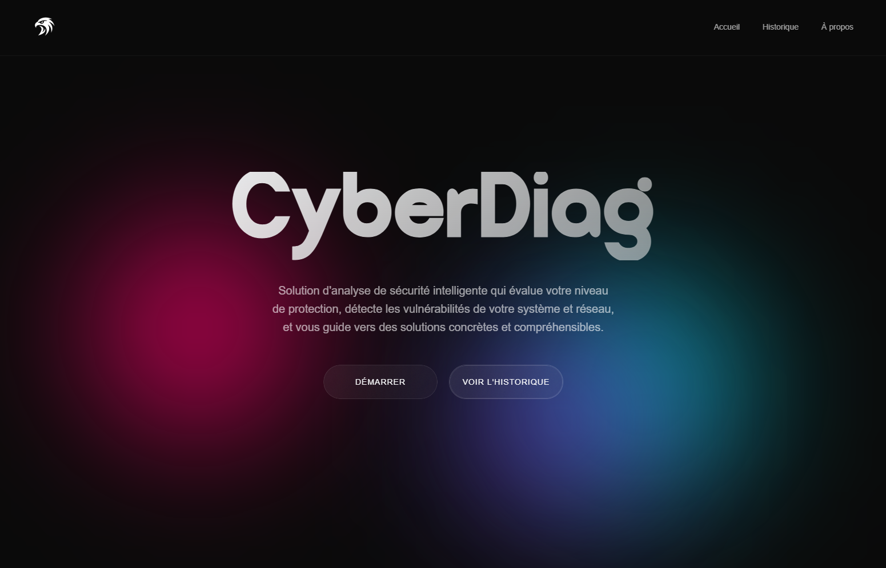
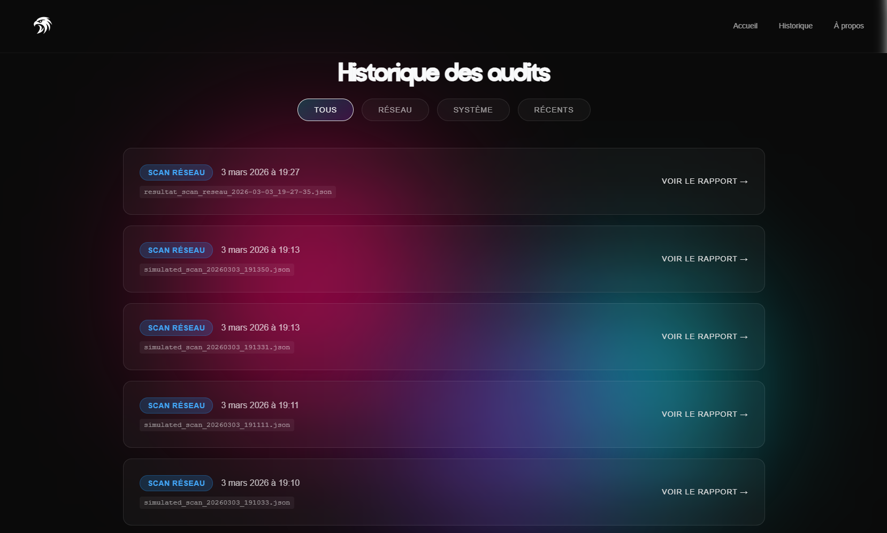
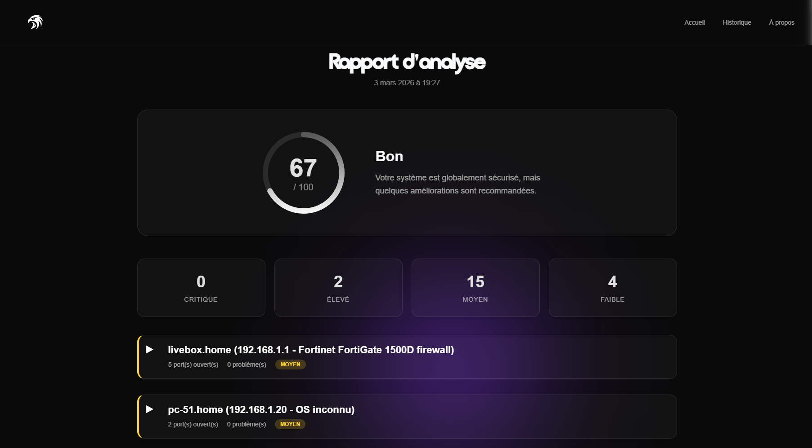
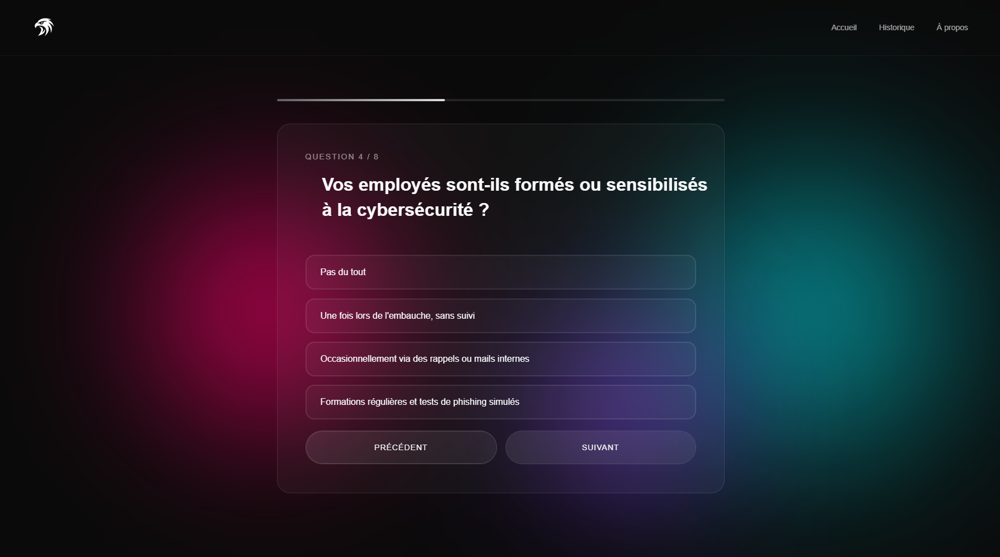
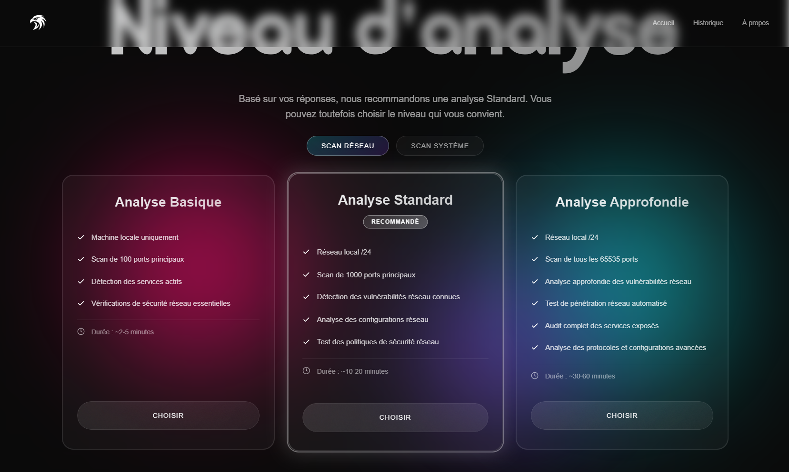

( Développé par l'équipe Dyvine )
AUDITEZ,
MAÎTRISEZ.
CyberDiag analyse et audite la sécurité de vos systèmes et réseaux Linux, pour vous offrir une vision claire de vos vulnérabilités.
EXPLOREZ
CYBERDIAG.
FONCTIONNALITÉS
Découvrez tout ce que CyberDiag peut faire pour vous.
Deux modes d'utilisation
Des modules séparés pour les analyses système et réseau, adaptés à chaque profil.

Historique
Retrouvez l'historique complet de vos analyses passées en un coup d'œil.

Résultats détaillés
Des résultats détaillés et exportables en HTML pour partager vos audits facilement.

Questionnaire
Un questionnaire pour adapter le niveau des résultats et obtenir un profil personnalisé.

Niveaux de scans
Différents niveaux de scans pour être toujours au même niveau que l'utilisateur.

Sécurisez votre infrastructure Linux en quelques
minutes.
CyberDiag,
gratuit, conçu par des passionnés.


QUESTIONS FRÉQUENTES
CyberDiag fonctionne-t-il sur toutes les distributions Linux ?
Oui, CyberDiag est compatible avec les principales distributions Linux (Debian, Ubuntu, CentOS, Fedora, Arch, etc.).
Est-ce que CyberDiag est gratuit ?
CyberDiag est un projet open-source développé dans un cadre universitaire. Il est entièrement gratuit.
Faut-il des droits root pour utiliser CyberDiag ?
Certaines analyses nécessitent des droits administrateur pour accéder aux configurations système. Il est recommandé de l'exécuter avec sudo.
Comment contribuer au projet ?
Vous pouvez contribuer via notre dépôt GitHub. Toute contribution est la bienvenue : code, documentation, retours d'utilisation.